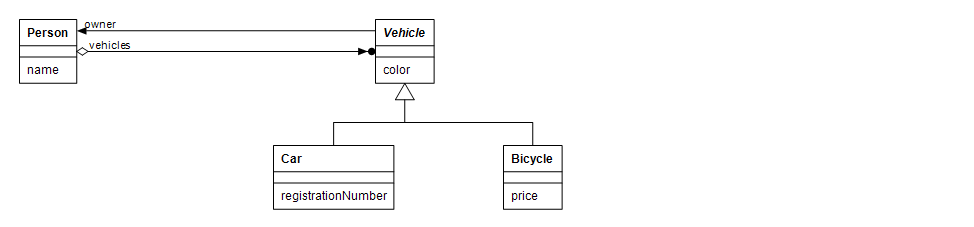

Code for the example is under the cmajor/projects/xmlSerializationTests directory in the attr_model and attr_test projects.
Suppose you are writing a traffic simulation application. A traffic simulation may contain a person class and classes for various vehicles:
A person has a name and it may own some vehicles. A vehicle has a color and a pointer to its owner. A car derives from a vehicle and has a registration number. A bicycle derives also from a vehicle and has a price.
In this example we build classes that can be serialized to XML and constructed from an XML representation.
Cmajor provides an automatic mechanism for serializing objects as XML. This works by declaring classes with an [xml] attribute. The compiler generates ToXml and FromXml member functions for classes having that attribute. They do the actual serialization to and from XML.
Here's code for an XML serializable person class:
The Person class has an [xml] attribute, so the compiler generates XML serialization code for it. The member variables of an XML class are serialized automatically unless they have an [xml="false"] attribute, so name and vehicles are serialized when Person object is serialized.
In addition to ToXml and FromXml member functions, the compiler generates member variables for storing an integer class identifier for an XML serializable class and stroring an object ID for each XML serializable object. They can be accessed using the ClassId and ObjectId member functions.
The UniqueXmlPtr is a unique ownership pointer class that contains an object ID of the object it points to. A UniqueXmlPtr pointer deletes the pointed-to object when it goes out of scope.
Let's move on to the Vehicle class:
Value of an enumerated type such as VehicleColor is serialized as a long value. This handles the color member variable of the Vehicle class. For the owner member variable, we have used the XmlPtr class that is like an ordinary pointer but in addition it contains an object ID of the object it points to.
The Car class derives from the Vehicle class, so the compiler overrides the ToXml and FromXml member functions. The overridden member functions call the base class member functions and in addition have serialization code for properties of the derived class:
The Bicycle is like the Car class and is here for completeness:
Now we are ready to create an example model consisting of XML classes and save the model to an XML file. Here's the code that does this:
We have created an instance of the XmlContainer class, and then created instances of Car, Bicycle and Person classes and added them to the container. The container does not own the objects added to it, so have we used UniqueXmlPtr for the Car, Bicycle and Person. The vehicles are released and added to the person object, because the person takes ownership of the vehicles added to it.
Then we have created an XmlBundle from the container by calling the CreateBundle function of the container. The XML bundle contains a reference to a root object, an object passed to the CreateBundle function, and also references to objects reachable from the root by traversing them using the XmlPtr and UniqueXmlPtr pointer objects. There are two kinds of bundles: shallow and deep. The shallow container does not contain other than the root object, but the deep container contains closure of objects reachable from the root up a depth. By default the depth is -1 which means the depth is unlimited.
Finally we have serialized the bundle to a string by calling the ToXmlString member function of the bundle, created a text file, and written the XML string to the file.
Here's the contents of the generated XML file:
<xmlBundle rootObjectId="1d897be9-da8b-3291-31ca-24819238918a"> <object classId="0" className="model.Car" objectId="ed184f7f-ac6d-d70b-8738-905f4f88741a"> <color value="0"/> <owner objectId="1d897be9-da8b-3291-31ca-24819238918a"/> <registrationNumber value="ABC-123"/> </object> <object classId="2" className="model.Person" objectId="1d897be9-da8b-3291-31ca-24819238918a"> <name value="Joe Coder"/> <vehicles> <item objectId="ed184f7f-ac6d-d70b-8738-905f4f88741a"/> <item objectId="51e07f96-05aa-748e-0090-a8108855c0b5"/> </vehicles> </object> <object classId="1" className="model.Bicycle" objectId="51e07f96-05aa-748e-0090-a8108855c0b5"> <color value="1"/> <owner objectId="1d897be9-da8b-3291-31ca-24819238918a"/> <price value="1000"/> </object> </xmlBundle>
The object IDs are string representations of the UUID class. For the XmlPtr and UniqueXmlPtr only the object ID of the pointed-to object is serialized. When reading an XmlBundle from an XML file, the bundle can recreate relations of the objects using the contained object IDs. The className attributes in the XML file are not used by the implementation in any way. They are generated so that classes can better be recognized by human readers.
For the system to be able to create XML serializable classes when reading their XML representation, the classes has to be registered. The registration is done by calling the compiler-generated static Register member function of an XML serializable class with an integer class identifier. The class identifiers should be unique within a program:
In addition to registration code, we have added full instantiation requests for the ConcreteXmlSerializableExtractor class template specializations of Vehicle, Car, Bicycle and Person classes, because the compiler is not able to automatically generate instantiations for them.
Now that we have the classes registered, they can be read from an XML file. Here's the code that loads the model:
The ToXmlBundle function parses an XML document from the passed XML string, creates the XML classes using class identifiers contained by the object elements, and resolves the relations of objects using object IDs. By default the bundle returned from the ToXmlBundle function destroys objects that are not owned by UniqueXmlPtrs.
Here's the main program that completes this example:
Implementation of the XML serialization scheme is done in half by the compiler and in half by the System.Xml.Serialization library.
The intf_model and intf_test projects under the cmajor/projects/xmlSerializationTests directory contain manual implementation of the XmlSerializable interface for the example classes Person, Vehicle, Car and Bicycle. The compiler implements this interface automatically for classes having an [xml] attribute.
The XmlSerializable interface has a key role in the XML serialization scheme. The compiler implements the XmlSerializable interface for each class that has an [xml] attribute. In the picture above the MyXmlSerializableClass represents such a class. The MyXmlSerializableClasses do not have to derive from a common base class. We need an interface because Cmajor lacks multiple inheritance. This interface contains member function signatures for generating an XML representation, the ToXml method, and on the other hand reading member variable values from an XML representation, the FromXml method. It also enables putting of XML serializable classes to an XmlContainer or to an XmlBundle.
When the compiler generates an implementation of the ToXml member function for a MyXmlSerializableClass, it generates a call to one of the ToXml overloads contained by the System.Xml.Serialization library for each member variable of the MyXmlSerializableClass. Similarly when the compiler generates an implementation of the FromXml member function of a MyXmlSerializableClass, it generates a call to one of the FromXml overloads contained by the System.Xml.Serialization library for each member variable of the MyXmlSerializableClass. The overloads are selected by the compiler using concept-based overloading.
The reason that the XmlContainer does not directly contain XmlSerializable interfaces is because interface objects cannot be directly put to containers in Cmajor. We need an intermediate class that is called XmlSerializableProxy that contains the interface object. Instances of XmlSerializableProxy class on the other hand can be put to containers,. So the Add member function of the XmlContainer creates a proxy object that holds the interface object and adds the proxy. The member functions of the XmlSerializableProxy delegate calls to the contained interface.
There's also an excuse why you can not directly put MyXmlSerializableClass* to an XmlContainer*, but you have to call free Add function template to do that. It's because Cmajor lacks member function templates.
The XmlContainer class has two mappings. From an object IDs to an XmlSerializableProxy* and from MyXmlSerializableClass* (represented as void*) to an XmlSerializableProxy*. This means that you can get XmlSerializableProxy* by object ID or by object pointer. You can also remove object and XmlSerializableProxy* by object ID, and create an XmlBundle from an object pointer.
An XmlBundle contains a root object and objects reachable from the root using those XmlPtrs and UniqueXmlPtrs.
When constructing an XmlBundle from an XML string, the ToXmlBundle function uses the XmlClassRegistry singleton to create a MyXmlSerializableClass associated with the class identifier read from an object XML element contained by the XML representation of the bundle.
The XmlSerializableExtractor is an abstract class that contains an abstract member function for creating an XmlSerializable interface from an object pointer. The ConcreteXmlSerializableExtractor overrides that member function for some class registered to XmlClassRegistry by a class identifier.
The XmlClassRegistry is a singleton class that has two maps and can create a MyXmlSerializableClass using class identifier, and extract an XmlSerializable interface from that object pointer using an XmlSerializableExtractor. The first map associates a class identifier to a function pointer that creates an object and the second map associates a class identifier to an XmlSerializableExtractor.